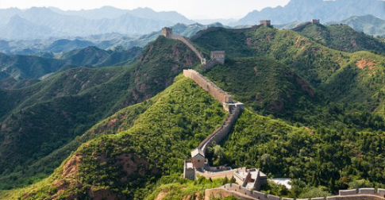

Maravillas del Mundo Moderno
La Gran Muralla de China
La Muralla China es una antigua fortificación china, construida y reconstruida entre el siglo V a.C y el siglo XVI para proteger la frontera norte del Imperio Chino durante las sucesivas dinastías imperiales.Se calcula que tiene unos 21.000km de longitud.
La gran muralla es sin duda una de las visitas imprescindibles si se tiene la oportunidad de viajar a China.
© Copyrigth 2021. Todos los derechos Reservados. Venezuela